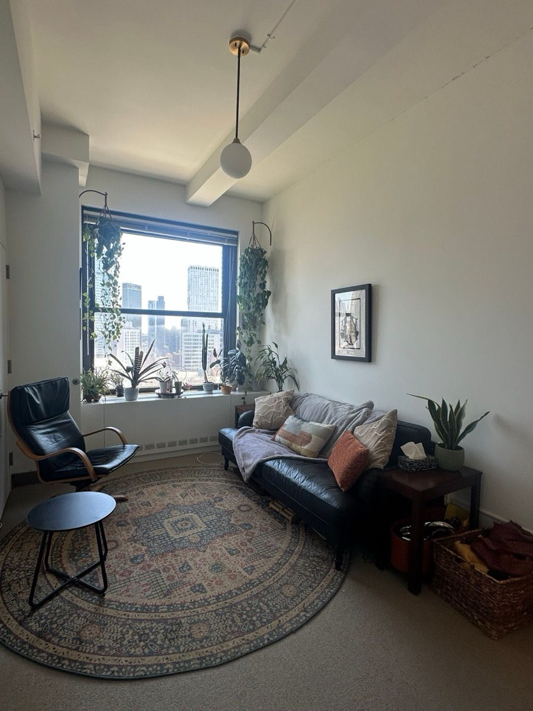

Therapy for late-diagnosed autistic adults · immigrants & children of immigrants
You've been keeping up for years. You don't have to here.
Psychodynamic therapy, with somatic tools when they help, for autistic adults diagnosed later in life, and for immigrants and children of immigrants carrying family expectations and intergenerational trauma. In person in Brooklyn Heights, or online across New York and New Jersey. Bilingual in English and 普通话.
Who I work with
Late-diagnosed autism
Autistic adults diagnosed later in life, anyone who suspects they might be autistic, and their partners.
Does this sound familiar? ↓Immigrants & children of immigrants
Adults building a life between two cultures, or working through family-of-origin patterns, cultural and intergenerational expectations, and what got passed down without words.
Does this sound familiar? ↓Late-diagnosed autism
Capable on the outside. Exhausted underneath.
- You learned the social rules by watching, copying, and rehearsing.
- You're the reliable one at work, then have nothing left at home.
- You were told you were "fine," "logical," or "just quiet" for most of your life.
- You know something is wrong, but you can't always name what you feel.
- A partner, a burnout, or your child's diagnosis made you look again.
None of this means something is wrong with you. It usually means you've been doing a lot of translation, for a long time, without support.
Immigrants & children of immigrants · Intergenerational trauma
Raised between two cultures. Carrying what your family couldn't say.
- You built a life here, and still feel the pull of the family and country you left.
- You were the translator, the achiever, the one who didn't add to the stress.
- Love in your family showed up as sacrifice, food, and worry, more than words.
- Setting a boundary with your parents brings up guilt, even when you know you need it.
- A big life change, like marriage, a new baby, or a move, has stirred up old family patterns.
- You don't feel fully at home in either culture, or either language.
I'm an immigrant too. You won't have to explain why you can't "just tell your parents how you feel," or why love and obligation feel so tangled. We can hold the love and the hurt at the same time, and work in English, 普通话, or both.
What sessions are like
Predictable, practical, on your terms
You don't need to arrive with the right words or a clear goal. Here's what you can expect.
No performance required
No forced eye contact, no small talk. Fidget, stim, pause, or look away. Silence is fine.
Clear structure
Each session has a simple shape: check in, the main work, and a short summary of what we covered.
Words are optional
If naming feelings is hard, we start with what you notice in your body, or with what's practical.
Your sensory needs
Tell me what helps: lighting, seating, camera on or off online. We adjust, without needing a reason.
Direct communication
I'll say what I mean and explain why I'm suggesting something. You can always ask, "why are we doing this?"
Not about fixing autism
The goal isn't to make you less autistic. It's less exhaustion, and a life that fits how you're wired.

The room
This is where we meet: a quiet room on a high floor at 26 Court Street, with natural light, plants, and a few places to sit. Choose the sofa, the chair, or a floor cushion, whatever is comfortable. There's also a weighted blanket, if you'd like one.
If you'd rather start online, that works too, and you can visit later.
The approach
Rooted in psychodynamic work, with tools that fit you
My work is rooted in psychodynamic Gestalt therapy. Depending on what you need, I bring in tools from somatic practices, EMDR, and IFS, especially when putting feelings into words is hard.
The foundation
Psychodynamic Gestalt
- What it is
- Exploring the patterns that shape how you relate, in the present moment, here in the room.
- Why it fits
- Whether after a late diagnosis or growing up between cultures, it helps you reread your history, and separate who you are from who you had to be.
- In session
- Paying attention to what's happening right now, including between us, with curiosity rather than judgment.
Tools I bring in, depending on what you need
Somatic therapy
- What it is
- Building awareness of signals inside the body (interoception): heart rate, tension, breath.
- Why it fits
- Research links difficulty naming emotions to interoception. Body awareness gives another way in.
- In session
- Noticing, grounding, and regulating your nervous system before and after hard topics.
- Interoception Lab
- A structured 12-week program drawn from Somatic Experiencing and Sensorimotor Psychotherapy, to help you build a connection with your subtle body cues.
EMDR
- What it is
- A structured trauma therapy using bilateral stimulation (eye movements or tapping).
- Why it fits
- It doesn't require retelling events in detail. Useful for bullying, rejection, and years of being misunderstood.
- In session
- A clear protocol with defined phases. Preparation comes first; processing starts only when you're ready.
Internal Family Systems (IFS)
- What it is
- A model of the mind as made of "parts": the masker, the critic, the one who just wants to shut the door.
- Why it fits
- It explains masking without blame: a part learned to protect you. We work with it, not against it.
- In session
- Getting to know these parts, often by noticing where they show up in the body.
Getting started
Three steps, nothing hidden
Free 20-minute consultation
A short virtual meeting by video. You don't need to prepare. We see whether this is a good fit.
First session
We go over your history, what's hard right now, and what you'd like to change, at your pace.
Ongoing sessions
Usually weekly at first. We review regularly whether it's helping, and adjust.
Couples
When you love each other, but keep missing each other
For many couples, a late diagnosis starts with the relationship: one partner feels unseen, the other feels criticized, and neither knows why the same argument keeps coming back.
Couples therapy with me helps each of you understand how the other is wired, and translate what goes unsaid: the tone, the silence, the meaning beneath the words. I work with neurodivergent couples, where one or both partners are autistic or ADHD, and with interracial and intercultural couples.
More about couples therapyDifferent wiring, not bad intentions
Understanding sensory needs, processing time, and communication styles, without blame.
Repair after conflict
Concrete ways to come back to each other after a shutdown, meltdown, or misunderstanding.
Clear agreements
Turning vague expectations into explicit ones, which often helps both partners relax.
Sessions
60 minutes · $300, in person or online.
About
Hi, I'm Lin.
I'm a licensed clinical social worker in Brooklyn Heights. Much of my practice is with autistic adults who were diagnosed later in life: capable, often successful, and quietly worn out from years of keeping up.
I also work with immigrants and adult children of immigrants. I'm an immigrant myself, so I know firsthand what it's like to live between two languages and two sets of expectations, and how family history follows you into adult life.
Before becoming a therapist, I worked in tech, so I know high-demand work, and the unspoken politics of a team, from the inside. I'm bilingual in English and Mandarin (普通话), and I pay attention to how race, culture, and neurodivergence meet.
My work is rooted in psychodynamic approaches, especially Gestalt. Depending on what you need, I bring in tools from somatic practices, EMDR, and IFS.
- Licensed Clinical Social Worker (LCSW) New York & New Jersey
- EMDR Training The Institute for Creative Mindfulness
- Somatic Embodiment & Regulation (SER) Certificate
- Psychodynamic Gestalt Training Two-year post-graduate
Fees & insurance
| Consultation | Free · 20 minutes · virtual |
|---|---|
| Individual session | $250 · 50 minutes |
| Couples session | $300 · 60 minutes |
| Insurance | Out-of-network. I don't bill insurance directly. |
| Reimbursement | You get a monthly superbill. Many PPO plans reimburse 50–80% after your deductible. |
| Check your benefits | Through Thrizer, in about a minute, with no commitment. |
Questions
Things people often ask
Do I need a formal autism diagnosis?
No. Many people come while they're still wondering, or after self-identifying. We can talk about whether a formal assessment would be useful for you.
I'm not good at talking about feelings. Will this work?
That's one of the most common reasons people come. We can start with the body, with practical problems, or with writing things down. Words can come later.
Is this ABA or social skills training?
No. This isn't about making you act less autistic. It's about understanding yourself, recovering from burnout, and living in a way that fits you.
Can we meet online with the camera off?
Yes, when that helps. Some people prefer camera off for part or all of a session.
Will I have to explain my culture or my family to you?
Not from scratch. I'm an immigrant myself, and I'm bilingual in English and 普通话. You can tell me what's specific to your family, and I'll ask when I don't know.
Do you work with partners too?
Yes. I see couples, including neurodivergent and interracial couples. More about couples therapy.
How often are sessions?
Usually weekly at first. Some people move to every other week once things feel steadier.
Book
Start with a free 20-minute consultation
Pick any open time. The consultation is a virtual meeting, and you'll get a confirmation email with the link. If you'd rather not call, email works just as well.
- Email: lin@startwithaninhale.com
- Call or text: (347) 735-8420
- Office: Brooklyn Heights, Brooklyn, NY